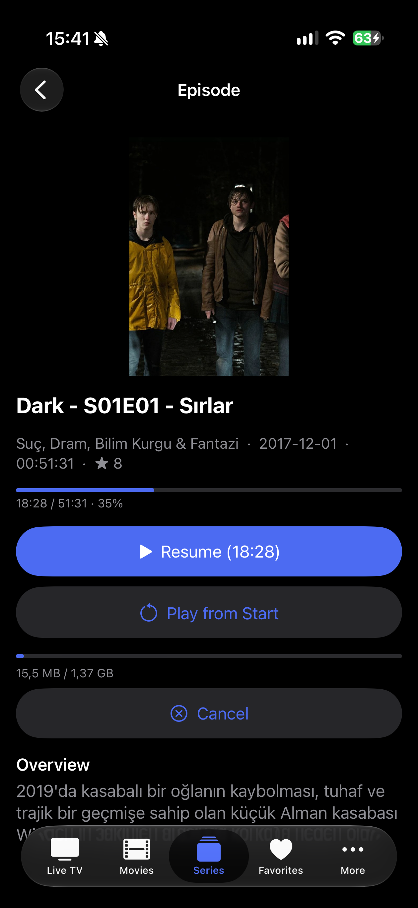

追加
Xtream CodesのログインまたはM3U / M3U8リンクを追加
Appleでサインインして、お気に入りと視聴履歴をデバイス間で同期

Xtream対応,広告なし,番組表
M3Uプレーヤー
自分のM3UまたはXtream Codesプレイリスト向けのシンプルなプレーヤー。
ライブ配信、映画、ドラマ。広告なし。
お気に入り、ダウンロード、続きから再生。
Easytv Playはメディアプレーヤーです。チャンネル、配信契約、コンテンツは提供しません。視聴する権限のあるソースだけを追加してください。番組表、字幕、画質はプロバイダに依存します。
広告なし。サードパーティーによるトラッキングなし。

あなたのプレイリスト
Easytv Playはチャンネル、配信契約、コンテンツを提供しません。利用権限のあるソースだけを追加してください。
お気に入り、ダウンロード、番組表、続きから再生、字幕、Face IDロック、Appleでサインインして同期。
追加
Appleでサインインして、お気に入りと視聴履歴をデバイス間で同期
ライブ
ライブラリを検索してお気に入りに保存
番組表

続きから

ダウンロード

チャンネル、配信契約、コンテンツは提供しません。視聴する権限のあるソースだけを追加してください。番組表、字幕、画質はプロバイダに依存します。
広告なし。サードパーティーによるトラッキングなし。
画面





ライセンス
このアプリは次のオープンソースコンポーネントを使用します。
© VideoLAN および VLCKit 作者。
GNU Lesser General Public License バージョン 2.1 以降（LGPL-2.1-or-later）の下でライセンスされています。フレームワークは動的にリンクされており、LGPL に従い利用者が置き換えできます。
Easytv Playは、自分のM3UまたはXtreamプレイリスト向けのIPTVプレーヤーです。
そのプレイリストのライブ配信、映画、ドラマを再生し、お気に入り、ダウンロード、続きから再生ができます。広告なし。サードパーティーによるトラッキングなし。
チャンネル、配信契約、コンテンツは提供しません。視聴する権限のあるソースだけを追加してください。番組表、字幕、画質はプロバイダに依存します。
Easytv Playはメディアプレーヤーです。チャンネル、配信契約、コンテンツは提供しません。視聴する権限のあるソースだけを追加してください。番組表、字幕、画質はプロバイダに依存します。
Xtream CodesのログインまたはM3U / M3U8リンクを追加
広告なし。サードパーティーによるトラッキングなし。
Appleでサインインして、お気に入りと視聴履歴をデバイス間で同期。詳細はプライバシーポリシーにあります。
Easytv Play のサポート。連絡先 hello@soneraltin.com.